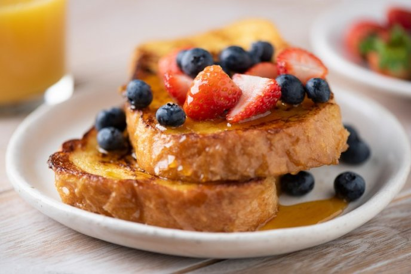
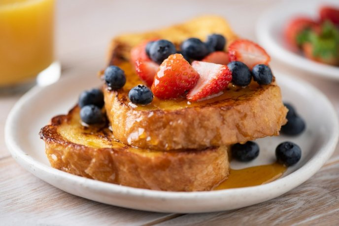
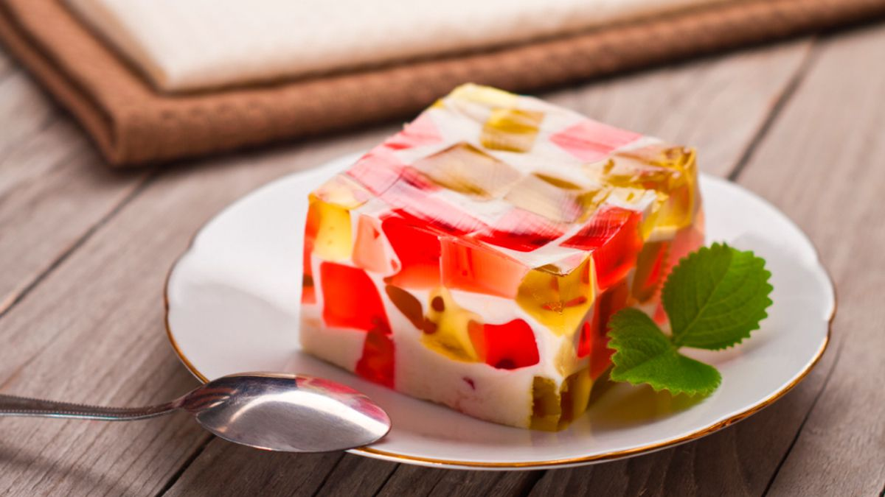
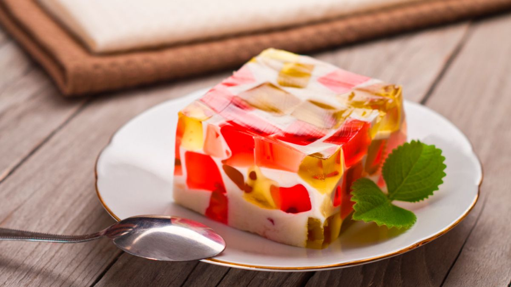

Desayunos
Menu
El desayuno es la primera comida del día, separada de la anterior por muchas horas. Tras esas horas de ayuno es fundamental proporcionar al organismo la energía y los nutrientes necesarios para hacer frente a todas las actividades que se realizan en esta parte del día.
Pide el menu 


 
